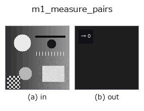

measure1d op• Datenarten: image → feature
• Aufruf: fullseye.apply(img, "m1_measure_pairs", a=0.5, b=0.5) (das 2-D-Modell ist ein Bild plus zwei skalare Regler a,b∈[0,1])
• HALCON-Äquivalent: measure_pairs (Bedeutung und Parameter sind in der HALCON-Referenz nachzulesen)

*Die Abbildung ist die tatsächliche Ausgabe auf einer synthetischen 128×128-Eingabe. Links Eingabe, rechts Ausgabe. Punktwolken als Draufsicht-Streudiagramm (Helligkeit = z), 1-D-Reihen als Linie, Volumen als Maximum-Projektion entlang z, Videos als mittleres Bild, komplexe Bilder als Betrag; Rückgabewerte, die kein Bild ergeben, werden als Werte gezeigt.*
Regler a durchfahren (0,1 / 0,5 / 0,9, der andere Regler auf Standard):
▸ m1_measure_pairs: Regler a durchfahren (Doku-Website)
Regler b durchfahren (0,1 / 0,5 / 0,9, der andere Regler auf Standard):
▸ m1_measure_pairs: Regler b durchfahren (Doku-Website)
Zählt steigend-fallende Kantenpaare (die beiden Enden eines hellen Objekts) entlang einer durch die Mitte verlaufenden Kalipergeraden (entspricht HALCON measure_pairs: extrahiert Paare gerader Kanten senkrecht zu einem Rechteck/Bogen).
a ist die Linienrichtung (theta = a*pi). Die Kantenerkennung ist dieselbe wie bei m1_measure_pos (subpixelgenaue Erkennung von Gradientenspitzen), und b (0 bis 1) ist ein Schwellwert relativ zur maximalen Amplitude. Die Kanten über dem Schwellwert werden der Reihe nach abgetastet, und jede Polaritätsfolge rising → falling wird als 1 Paar gezählt (Feature, ganzzahliger Wert). 0.0 bei weniger als 2 Kanten.
• Leitfaden zur Familie gallery2d_contour_measure
• measurement_uncertainty — Messunsicherheit und Kalibrierung — was nötig ist, um zu behaupten, dass man misst
• Katalog der Beispieldaten (Download-URLs / Lizenzen) — 2-D nutzt skimage.data (BSD/Public Domain) plus synthetische Bilder, 3-D nennt Download-URLs echter Datenquellen (Stanford, PDS, …).
• Herkunft und Literatur der Operatoren — die Quellen der Forschung/Verfahren, auf denen diese Operatorfamilie beruht.
• Der kanonische Algorithmus (Autor, Jahr) und seine Anwendungen stehen im Familienleitfaden oben.
Das Programm unten ist nachweislich lauffähig (gleiche Eingabe wie die Abbildung). In der Studio-Hilfe wird dieser Block zu Schaltflächen, die es sofort laden und ausführen.
m1_measure_pairs 0.50 0.50
▸ Diese Pipeline laden · Laden & ausführen
• gallery2d_contour_measure — py -3.11 examples/gallery2d_contour_measure.py
• poc_dimensional_inspection — py -3.11 examples/poc_dimensional_inspection.py
feature als Eingabe)measure1d)m1_measure_projection · m1_measure_pos · m1_measure_thresh · m1_fuzzy_measure_pos
*Provenance: ops.py — 2D Operator-Registry. Diese Notiz wird von tools/opdocs.py md erzeugt (nicht von Hand bearbeiten).*
© 2026 Kazufumi Furuse — Fullseye operator documentation. Licensed under Apache-2.0.